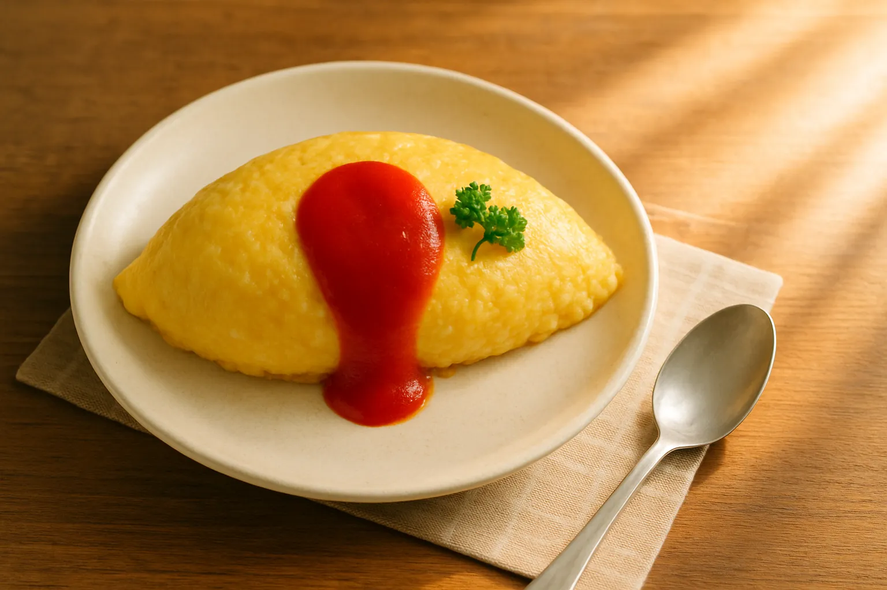

真黃金食譜
密碼學工具
其實所謂的黃金食譜不是指料理，而是CyberChef的操作過程。在這個軟體中即稱為「食譜」，沒想到吧哈哈！
製作步驟
把 hello world 字樣使用 AES 演算法加密食譜
- 拖曳 AES 食譜
-
Key 為
765765765765765765765765765765765765765765765765 -
IV 為
765765765765765765765765765765765 - 個別都是使用 HEX
- 得到密文 8fc39ac6f835bb73d83f16fdfc064ecf